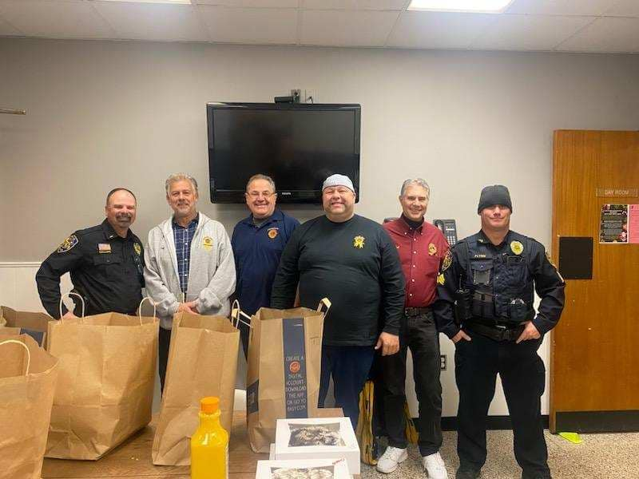
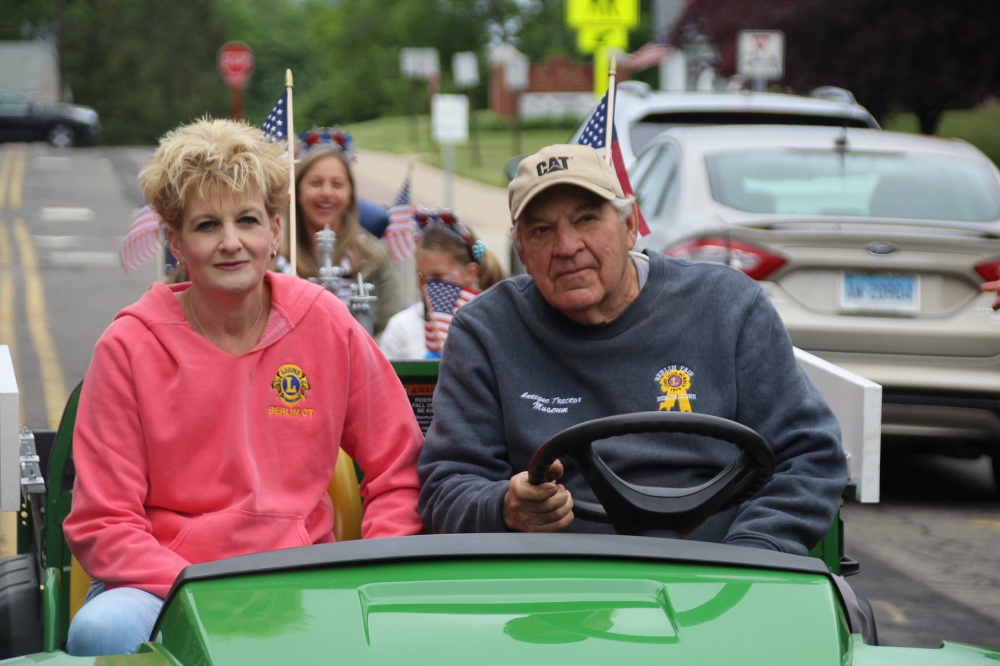

Berlin Lions Club
The Berlin Lions Club is a group of like-minded individuals who share one common purpose: the desire to give back and to make everything we touch better.
The Berlin Lions Club was chartered in 1941 under the jurisdiction of Lions Clubs International, and incorporated under the laws of the State of Connecticut. For more than eighty years, we have been a cornerstone of the Berlin community — showing up at parades, fundraisers, school events, and wherever our neighbours need us most.
We are part of Lions Clubs International, the world's largest service club organisation, with over 48,000 clubs and 1.4 million members in more than 200 countries. Our local chapter, District 23-B, carries that global mission right here in Berlin, CT.
We are everyday people — neighbours, business owners, parents, and retirees — united by a commitment to community and a passion for making a real difference.

To create and foster a spirit of understanding among the peoples of the world.
To promote the principles of good government and good citizenship.
To take an active interest in the civic, cultural, social, and moral welfare of the community.
To unite the members in the bonds of friendship, good fellowship, and mutual understanding.
To provide a forum for open discussion of all matters of public interest — free from partisan politics and sectarian religion.
To encourage service-minded people to serve their community without personal financial reward, and to promote high ethical standards in all endeavors.
From annual fundraisers to hands-on community donations, the Berlin Lions are always in action. Here are some of the ways we serve Berlin and beyond.

Our annual Visually Impaired Persons (VIP) Fishing Tournament gives individuals with visual impairments the chance to compete in a fully supported, free event — one of our most beloved traditions.

A beloved annual fundraiser featuring live music, a wide selection of wines and local craft beers. A great community night out that directly funds our charitable giving throughout the year.

Every December we host our Annual Christmas Tree Walk at the Berlin Lions Fairgrounds, spotlighting a different local charity each evening with complimentary hot chocolate and festive displays.

Our Annual Luminary display at Veterans Park honours Berlin's veterans and raises thousands of dollars for the Berlin Veterans Commission — $12,000 in 2024 alone.

We award scholarships to Berlin High School graduates each year, investing in the next generation of our community. We also recognise outstanding local citizens and organisations through our awards programme.

Year-round we show up — at parades, food drives, school donations, clothing drives, and wherever our community needs us. In 2025 alone we supported over ten local organisations across Berlin.
Joining the Berlin Lions Club is more than signing up to volunteer. It's becoming part of something much bigger — a global family of people committed to service, friendship, and community.
Lions form genuine bonds with their fellow members. Whether at a club meeting, a fair, or a charity event, you'll build meaningful connections with people who share your values — friendships that last far beyond any single event.
When you join the Berlin Lions, you join a network of over 1.4 million Lions in more than 200 countries. You're part of the world's largest service club organisation, with a shared mission that spans the globe but starts right here in Berlin, CT.
At the heart of every Lions club is one constant: service. Giving your time and energy to others is one of the most rewarding things a person can do. You'll leave each event knowing you've made a genuine difference in someone's life.
We're always looking for new members. The process is straightforward — come as you are, bring a willingness to serve, and we'll do the rest.
Send us an email at secretary@berlinlions.org or give us a call at 860-828-0063. We'd love to hear from you and answer any questions you have.
We meet regularly right here in Berlin. Come along as a guest, see how we operate, and meet the people behind the club. There's no commitment required at this stage — just come and say hello.
Join us at one of our events — a fair, a fundraiser, a community drive. Getting involved is the best way to experience what Lions membership is all about before making it official.
Once you're ready, you'll be formally inducted as a member of the Berlin Lions Club and Lions Clubs International. Welcome to the pride — and to a community that will have your back.
Berlin Lion's Club
430 Beckley Road
P.O. Box 23
Berlin CT, 06037
secretary@berlinlions.org
860-828-0063